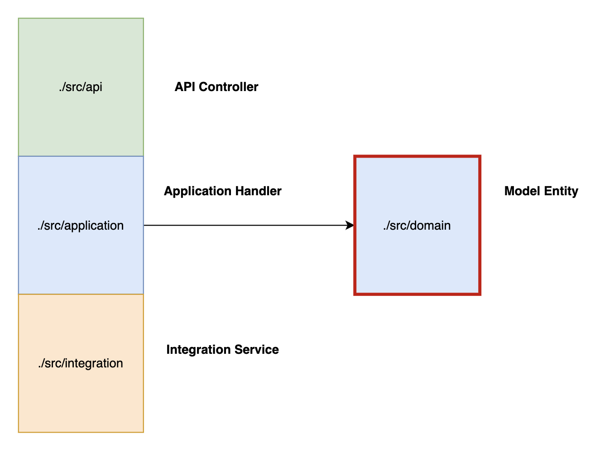

Neuroglia Python Framework
This Python framework is a lightweight layer built on top of FastAPI. It offers developers a set of useful tools and features that can be applied to any microservice, no matter its specific purpose or domain. These features include:
- Adherence to 12-Factor App principles.
- Built-in MVC Web App structure: It provides a foundation for building web applications using the Model-View-Controller pattern, with essential abstractions.
- Simplified Dependency Injection: A straightforward mechanism for managing dependencies, including automatic discovery and instantiation of classes.
- Class-based API Controllers with Automatic Loading: Easily define API controllers using classes, with the framework automatically finding and loading them.
- Modular Command/Query Separation (CQRS): Supports a clear separation of commands (actions that change data) and queries (actions that retrieve data).
- Optional Event-Sourcing: Provides the option to implement event-sourcing for building event-driven domain models.
-
Clean, Layered Code: Encourages a clean architecture approach, similar to the principles outlined in [link to clean architecture article].
- Pure Domain Models: Allows you to define domain models that are independent of any specific persistence mechanism.
- Application Handlers: Provides a structure for handling commands, queries, events, and background tasks within your application logic.
- Repository Pattern Implementation: Includes support for the Repository pattern for abstracting data access.
- Separation of API and Domain: Keeps API controllers, endpoints, and data transfer objects (DTOs) separate from your core domain models and business logic.
-
Native Asynchronous Event Handling with RxPy: Offers built-in support for handling, emitting, and ingesting asynchronous events (in JSON CloudEvent format) using the ReactiveX programming paradigm with RxPy.
- Data Model Mapping: Provides tools for easily mapping data between your domain models and integration layers.
- Easy Background Task Scheduling: Integrates seamlessly with apscheduler for scheduling background tasks.
- And more...
Code Structure
Entry Point
The main entry point of your application is typically the src/main.py file (or src/api/main.py).
This file is where you define all the necessary dependencies and specify the sub-folders where the framework should dynamically load your API, Application, Integration, and Domain Layers.
Framework Conventions
The src folder contains four distinct Layers:

-
API Layer (Controllers):
uses the Application Layer- Defines the endpoints available to external clients (incl. OpenAPI specs)
- Maps each endpoint to its corresponding Application handler.
- Maps external data (DTO's) models (API Requests and Responses schemas) to internal Domain layer
-
Application Layer (Handlers and Services):
executes the main biz logic, uses the Domain and Integration Layers- Loads the logic for handling commands, queries, events, tasks, and any other business logic services.
-
Integration Layer (Dependencies):
provides reusable independent logic (persistence Layer, API clients, external logic)- Loads any external API client services, persistence layer clients, and their associated data models (API DTOs for requests and responses).
-
Domain Layer (Models):
contains the core business domain models and rules- Defines the core entities, value objects, and business rules of your application.
- These models should be persistence-agnostic and represent your business domain.
Developer Guide
WIP - DISCLAIMER
This section was generated by AI and contains many errors - this is still in-progress!! Please refer to the samples code for accurate information.
Core Framework Components
The Neuroglia framework is composed of multiple modular components that work together to provide a comprehensive development experience:
1. Core Module (neuroglia.core)
The core module provides foundational utilities and classes:
- TypeFinder: Discovers classes and types within specified modules
- ModuleLoader: Handles dynamic loading of modules
- ProblemDetails: Standardized error response format
- OperationResult: Wrapper for operation results with success/failure status
2. Dependency Injection (neuroglia.dependency_injection)
A lightweight dependency injection system:
- ServiceProvider: Central container for registering and resolving services
- ServiceCollection: Registry for service definitions
- Automatic Discovery: Services can be automatically discovered and registered
# Example of dependency registration
from neuroglia.dependency_injection.service_provider import ServiceCollection
services = ServiceCollection()
services.add_singleton(MyService)
services.add_scoped(ScopedService)
services.add_transient(TransientService)
provider = services.build_service_provider()
my_service = provider.get_required_service(MyService)
3. Web Hosting (neuroglia.hosting)
Web application hosting abstractions:
- WebApplicationBuilder: Factory for building and configuring web applications
- WebHost: Base host for web applications, integrating with FastAPI
- Middleware Support: Exception handling, CloudEvents, etc.
# Example of application setup
from neuroglia.hosting.web import WebApplicationBuilder
builder = WebApplicationBuilder()
# Configure services
app = builder.build()
4. MVC Pattern (neuroglia.mvc)
Support for Model-View-Controller pattern:
- ControllerBase: Base class for creating API controllers
- Automatic Controller Discovery: Controllers are automatically found and registered
# Example controller
from fastapi import APIRouter
from neuroglia.mvc.controller_base import ControllerBase
class UsersController(ControllerBase):
def __init__(self):
super().__init__()
self.router = APIRouter(tags=["users"])
@self.router.get("/users")
async def get_users():
# Implementation
return []
5. CQRS and Mediation (neuroglia.mediation)
Support for Command Query Responsibility Segregation:
- Mediator: Central hub for handling commands and queries
- RequestHandler: Base class for command and query handlers
# Command example
from neuroglia.mediation.mediator import RequestHandler
class CreateUserCommand:
def __init__(self, name: str, email: str):
self.name = name
self.email = email
class CreateUserCommandHandler(RequestHandler[CreateUserCommand, str]):
async def handle(self, request: CreateUserCommand) -> str:
# Implementation
return "user_id"
# Usage
result = await mediator.send(CreateUserCommand("John", "john@example.com"))
6. Data Access (neuroglia.data)
Database access abstractions:
- Repository Pattern: Generic repositories for data access
- MongoDB Integration: Ready-to-use MongoDB repositories
- Event Sourcing: Support for event sourcing pattern
- Queryable: Fluent query interface
# Repository example
from neuroglia.data.infrastructure.mongo.mongo_repository import MongoRepository
class UserRepository(MongoRepository[User, str]):
def __init__(self, connection_string: str):
super().__init__(connection_string, "users", "users")
7. Event Handling (neuroglia.eventing)
Event-based communication support:
- CloudEvents: Support for CloudEvents standard
- Event Publishing: Mechanisms to publish events
- Event Ingestion: Capabilities to consume events
# Event publishing example
from neuroglia.eventing.cloud_events.infrastructure.cloud_event_publisher import CloudEventPublisher
publisher = CloudEventPublisher("source")
await publisher.publish("user.created", {"id": "123", "name": "John"})
8. Object Mapping (neuroglia.mapping)
Mapping between different object representations:
- Mapper: Bidirectional object mapping
- Profile Configuration: Define mapping profiles for different object types
# Mapping example
from neuroglia.mapping.mapper import Mapper
# Configure mapping
Mapper.create_map(UserDTO, User)
Mapper.create_map(User, UserDTO)
# Map objects
user_dto = Mapper.map(User("123", "John", "john@example.com"), UserDTO)
9. Serialization (neuroglia.serialization)
Serialization utilities:
- JsonSerializer: JSON serialization with enhanced features
- Customizable serialization options
10. Reactive Programming (neuroglia.reactive)
Support for reactive programming:
- RxPy Integration: Reactive Extensions for Python
- RxAsync: Asynchronous reactive programming utilities
Creating a New Application
Follow these steps to create a new Neuroglia application:
-
Set up project structure:
my_project/ ├── api/ │ ├── main.py # Entry point │ └── controllers/ # API controllers ├── application/ │ ├── commands/ # Command handlers │ ├── queries/ # Query handlers │ ├── events/ # Event handlers │ └── services/ # Application services ├── domain/ │ └── models/ # Domain models └── integration/ ├── models/ # External data models └── services/ # External services -
Create the entry point (
api/main.py): ```python import logging from neuroglia.hosting.web import WebApplicationBuilder from neuroglia.mapping.mapper import Mapper from neuroglia.mediation.mediator import Mediator
# Configure logging logging.basicConfig(level=logging.INFO) log = logging.getLogger(name)
# Create application builder builder = WebApplicationBuilder()
# Configure services Mapper.configure(builder, ["myproject.application"]) builder.services.add_singleton(Mediator)
# Build and run the application app = builder.build() ```
- Create domain models (
domain/models/user.py): ```python from dataclasses import dataclass from neuroglia.data.abstractions import AggregateRoot
@dataclass class User(AggregateRoot[str]): name: str email: str ```
- Create commands and queries: ```python # application/commands/create_user.py from dataclasses import dataclass from neuroglia.mediation.mediator import RequestHandler
@dataclass class CreateUserCommand: name: str email: str
class CreateUserCommandHandler(RequestHandler[CreateUserCommand, str]): async def handle(self, request: CreateUserCommand) -> str: # Implementation return "user_id" ```
- Create controllers (
api/controllers/users_controller.py): ```python from fastapi import APIRouter, Depends from neuroglia.mvc.controller_base import ControllerBase from neuroglia.mediation.mediator import Mediator from application.commands.create_user import CreateUserCommand
class UsersController(ControllerBase): def init(self, mediator: Mediator): super().init() self.mediator = mediator self.router = APIRouter(tags=["users"])
@self.router.post("/users")
async def create_user(name: str, email: str):
return await self.mediator.send(CreateUserCommand(name, email))
```
Using Event Sourcing
Event Sourcing is a powerful pattern that Neuroglia supports out of the box:
- Define domain events: ```python from dataclasses import dataclass from neuroglia.data.abstractions import DomainEvent
@dataclass class UserCreatedEvent(DomainEvent): name: str email: str ```
- Create event-sourced aggregate: ```python from neuroglia.data.abstractions import AggregateRoot
class User(AggregateRoot[str]): _name: str = None _email: str = None
@property
def name(self) -> str:
return self._name
@property
def email(self) -> str:
return self._email
@staticmethod
def create(id: str, name: str, email: str) -> "User":
user = User(id)
user.apply_change(UserCreatedEvent(id, name, email))
return user
def _on_user_created(self, event: UserCreatedEvent):
self._name = event.name
self._email = event.email
```
- Configure event store: ```python from neuroglia.data.infrastructure.event_sourcing.event_store.event_store import ESEventStore from neuroglia.data.infrastructure.event_sourcing.event_sourcing_repository import EventSourcingRepository
# Setup event store event_store = ESEventStore("connection_string", "stream_prefix")
# Create repository user_repository = EventSourcingRepositoryUser, str ```
Running Background Tasks
Neuroglia integrates with apscheduler for background tasks:
from apscheduler.schedulers.asyncio import AsyncIOScheduler
from neuroglia.hosting.abstractions import HostedService
class BackgroundTaskService(HostedService):
def __init__(self):
self._scheduler = AsyncIOScheduler()
async def start_async(self):
# Add jobs
self._scheduler.add_job(self._process_data, 'interval', minutes=5)
self._scheduler.start()
async def stop_async(self):
self._scheduler.shutdown()
async def _process_data(self):
# Task implementation
pass
Advanced Features
Real-time Communication with CloudEvents
from neuroglia.eventing.cloud_events.infrastructure import CloudEventIngestor
from neuroglia.eventing.cloud_events.decorators import cloud_event_handler
class NotificationService:
def __init__(self, event_ingestor: CloudEventIngestor):
event_ingestor.subscribe("user.created", self._on_user_created)
@cloud_event_handler
async def _on_user_created(self, event_data):
# Process user created event
user_id = event_data["id"]
# Send notification
Custom Repository Implementation
from neuroglia.data.infrastructure.abstractions import Repository
class CustomRepository(Repository[Entity, str]):
async def add(self, entity: Entity) -> None:
# Custom implementation
async def update(self, entity: Entity) -> None:
# Custom implementation
async def remove(self, entity: Entity) -> None:
# Custom implementation
async def find_by_id(self, id: str) -> Optional[Entity]:
# Custom implementation
Samples
OpenBank
Implements a simplified Bank that manages Accounts, Users and Transactions with full Event Sourcing, CQRS
Desktop Controller
Remotely and securely control custom files or commands on a Desktop running the app as a Docker container...
API Gateway
Expose single entry point for 3rd party clients into an internal layer, like a GenAI stack... Models a Prompt entity, enforces a business logic (e.g. Prompt' state-machine), handles scheduled background task (with persistence), exposes API with multiple Security schemes, ...
Cisco Remote Output Collector
Statefull microservice that handles complex and custom HTTP Commands which in turn each encapsulates arbitrary interactions with given Cisco Device(s) via Telnet, such as FindPrompt, CollectCommandLineOutput, AddConfiguration, SaveConfiguration, Ping, Traceroute, ClearNatTranslation, CheckReachability, BounceInterface, RunViaTelnetTo, FindSpanningTreeRoot, ... etc.
Current state: functional but simple implemention, 100% stateless collection of multiple CLI to a single device via Telnet.
TODO:
- [ ] Add Session management (defines a Pod for subsequent scenarios) with persistence
- [ ] Add DeviceConnection and ConnectionManager
- [ ] Add DeviceDrivers and PromptPatterns libraries
- [ ] ...
Deployment
Docker Deployment
The framework is designed to work seamlessly with Docker. A typical Dockerfile might look like:
FROM python:3.10-slim
WORKDIR /app
COPY requirements.txt .
RUN pip install --no-cache-dir -r requirements.txt
COPY . .
EXPOSE 8000
CMD ["uvicorn", "api.main:app", "--host", "0.0.0.0", "--port", "8000"]
Environment Configuration
Following the 12-Factor App principles, configuration is stored in environment variables:
from neuroglia.hosting.abstractions import ApplicationSettings
from pydantic import BaseSettings
class MyAppSettings(ApplicationSettings):
database_url: str
api_key: str
debug_mode: bool = False
Testing
The framework supports comprehensive testing with pytest:
# Example test for a command handler
async def test_create_user_command():
# Arrange
handler = CreateUserCommandHandler(mock_repository)
command = CreateUserCommand("test", "test@example.com")
# Act
result = await handler.handle(command)
# Assert
assert result is not None
assert mock_repository.add.called_once
Best Practices
- Keep Domain Models Pure: Domain models should be free of infrastructure concerns
- Use Commands for State Changes: All state-changing operations should be modeled as commands
- Use Queries for Reading Data: All data retrieval should be modeled as queries
- Leverage Dependency Injection: Always use DI to create loosely coupled components
- Handle Errors with Problem Details: Use the standard ProblemDetails format for error responses
- Follow Layered Architecture: Maintain clear boundaries between API, Application, Domain, and Integration layers
Conclusion
The Neuroglia Python Framework provides a comprehensive foundation for building clean, maintainable, and feature-rich microservices. By embracing modern architectural patterns like CQRS, Event Sourcing, and Clean Architecture, it helps developers create applications that are easier to understand, test, and evolve over time.
For more information, check out the sample applications or contribute to the framework development.